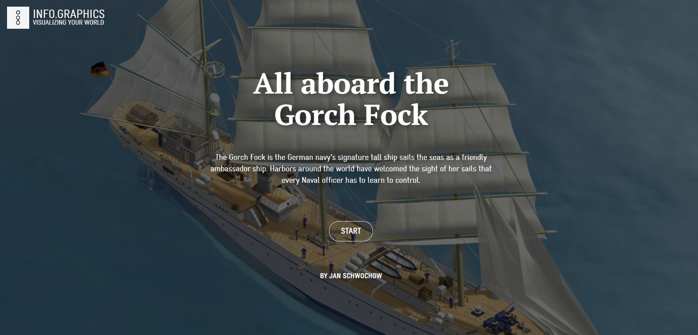
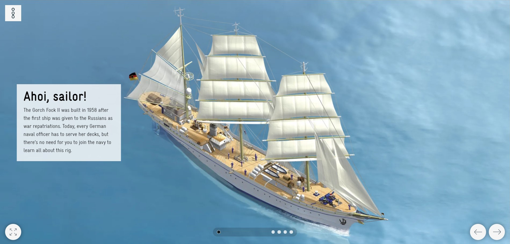
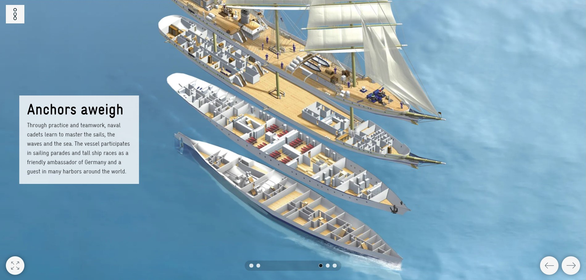
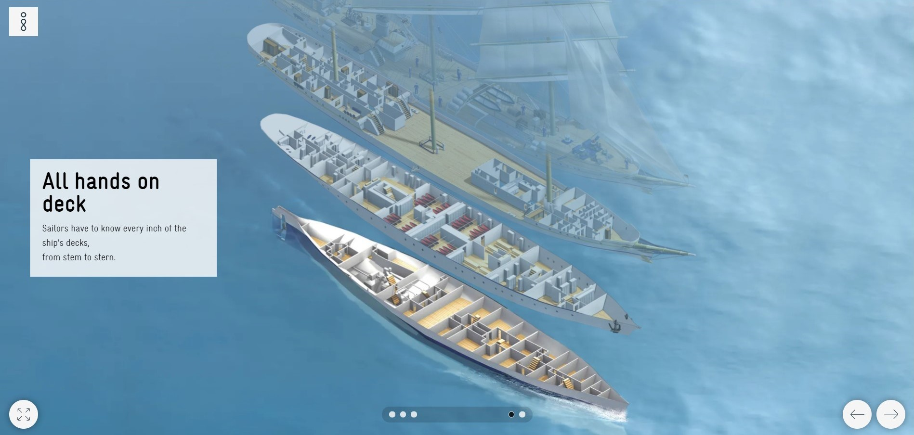
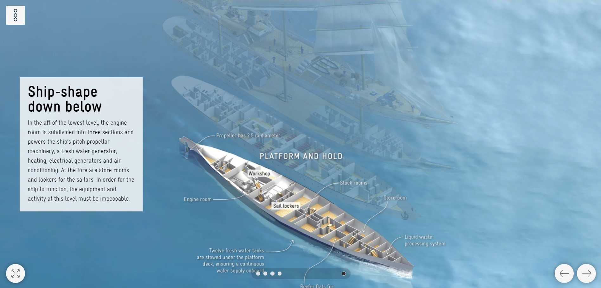
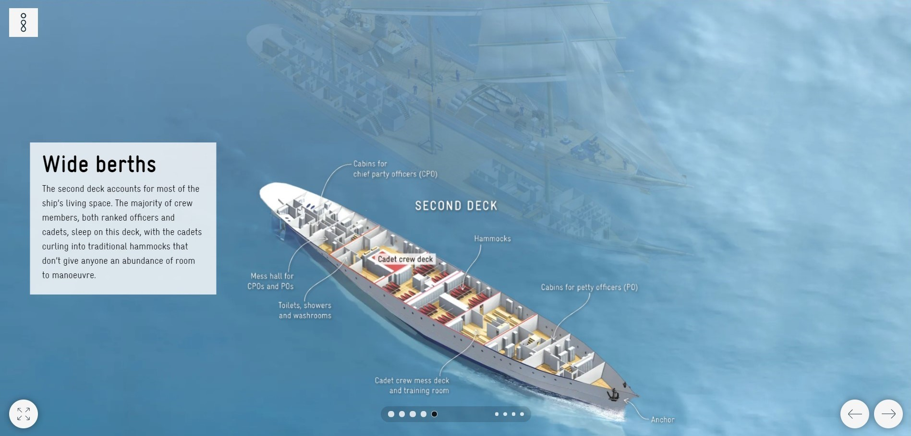
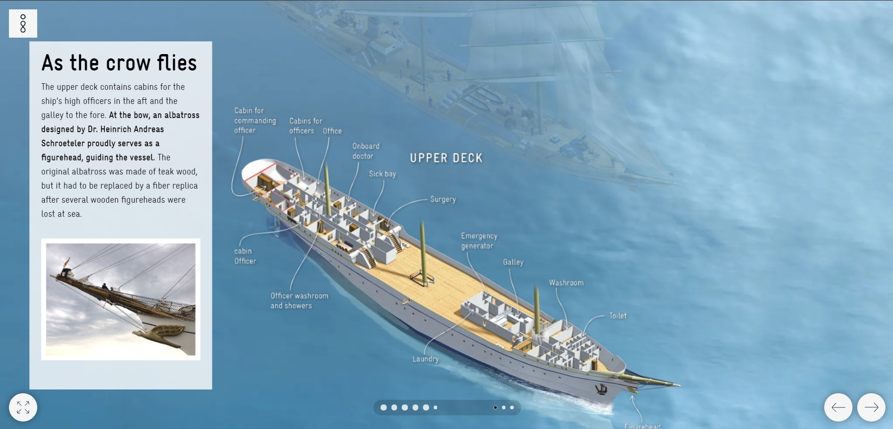
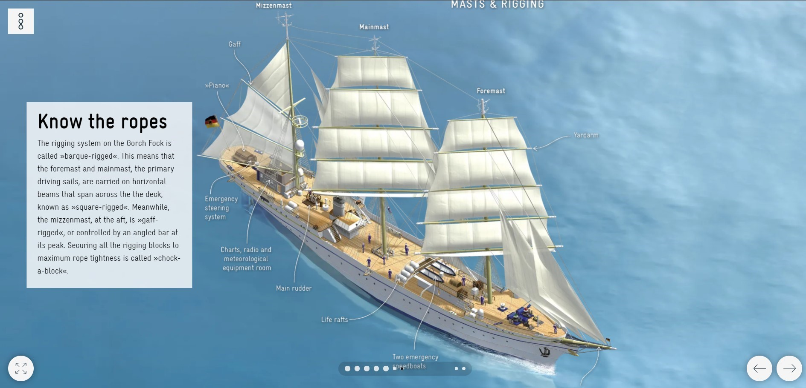
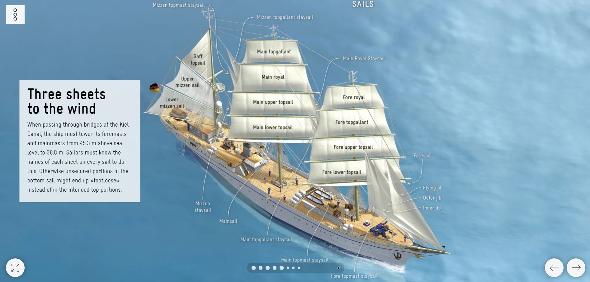
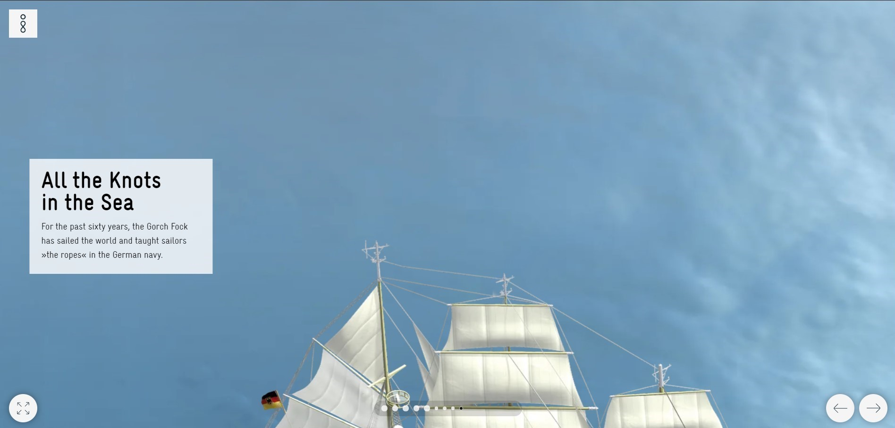

Es un especialista en infografías y periodista desde hace 28 años aproximadamente, fue director de arte de la unidad de infografías de la revista Stern y Max, hoy es el fundador del Grupo Infografía GmbH en Berlín, que ha recibido numerosos premios. Pueden ser encontrados en la web como info.graphics, se especializan en el diseño de información y la visualización de datos. Jan es el autor de los bestsellers “DEUTSCHLAND VERSTEHEN” y “The Global Economy as You’ve Never Seen It”
En este proyecto “All aboard the Gorch Fock” y en varios otros similares utiliza la técnica de scrollytelling para presentar la infografía. Es demasiado atractivo ver cómo a medida que te vas introduciendo y vas avanzando a lo largo de la infografía, se van desplegando cuadros de información, además que es utilizada la imagen central para narrar a medida que van cambiando los datos, mostrando desde generalidades hasta lo especifico y particular.

El Gorch Fock es el velero insignia de la marina alemana que navega por los mares como un amistoso barco embajador.

¡Ahoi, marinero! - El Gorch Fock II fue construido en 1958 después de que el primer barco fuera entregado a los rusos como repatriaciones de guerra.

Leven anclas - Mediante la práctica y el trabajo en equipo, los cadetes navales aprenden a dominar las velas, las olas y el mar.

Todas las manos a la cubierta - Los marineros deben conocer cada centímetro de la cubierta del barco, desde la proa hasta la popa.

Barco, forma de abajo - En la popa del nivel más bajo, la sala de máquinas se subdivide en tres secciones y alimenta la maquinaria de propulsión de paso del barco, un generador de agua dulce, calefacción, generadores eléctricos y aire acondicionado.

Literas anchas - La segunda cubierta representa la mayor parte del espacio vital del barco.

Mientras el cuervo vuela - En la proa, un albatros diseñado por el Dr. Heinrich Andreas Schroeteler sirve con orgullo como figura decorativa, guiando el barco.

Conocer a fondo - El sistema de aparejo del Gorch Fock se llama “aparejado con barca”.

Tres hojas al viento - Al pasar por los puentes del canal de Kiel, el barco debe bajar sus mástiles de trinquete y mástiles mayores de 45,3m sobre el nivel del mar a 39,8m.

Todos los nudos en el mar - Durante los últimos sesenta años, el Gorch Fock ha navegado por el mundo y ha enseñado a los marineros "los cabos" de la marina alemana.